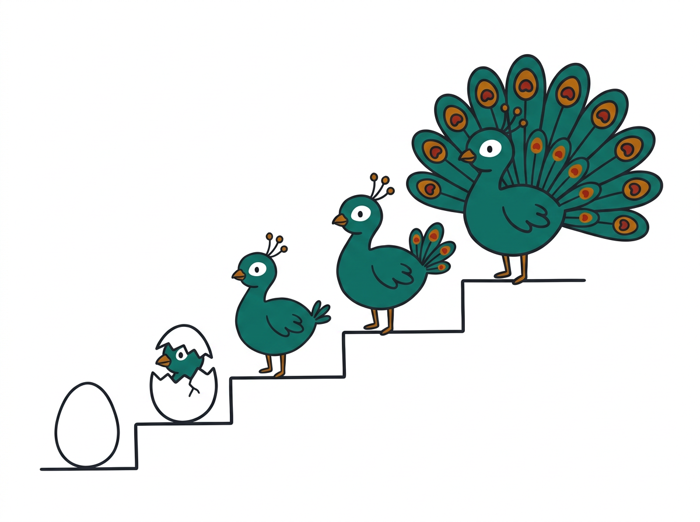
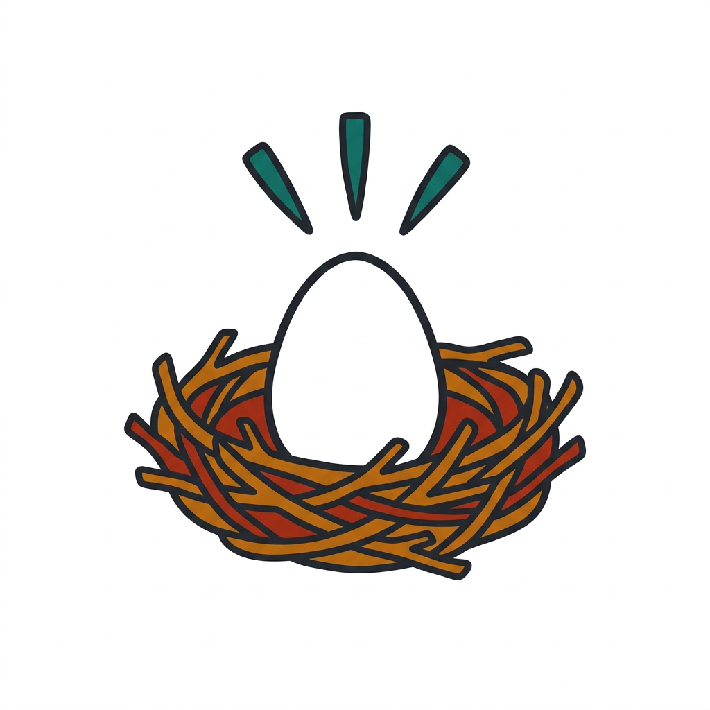
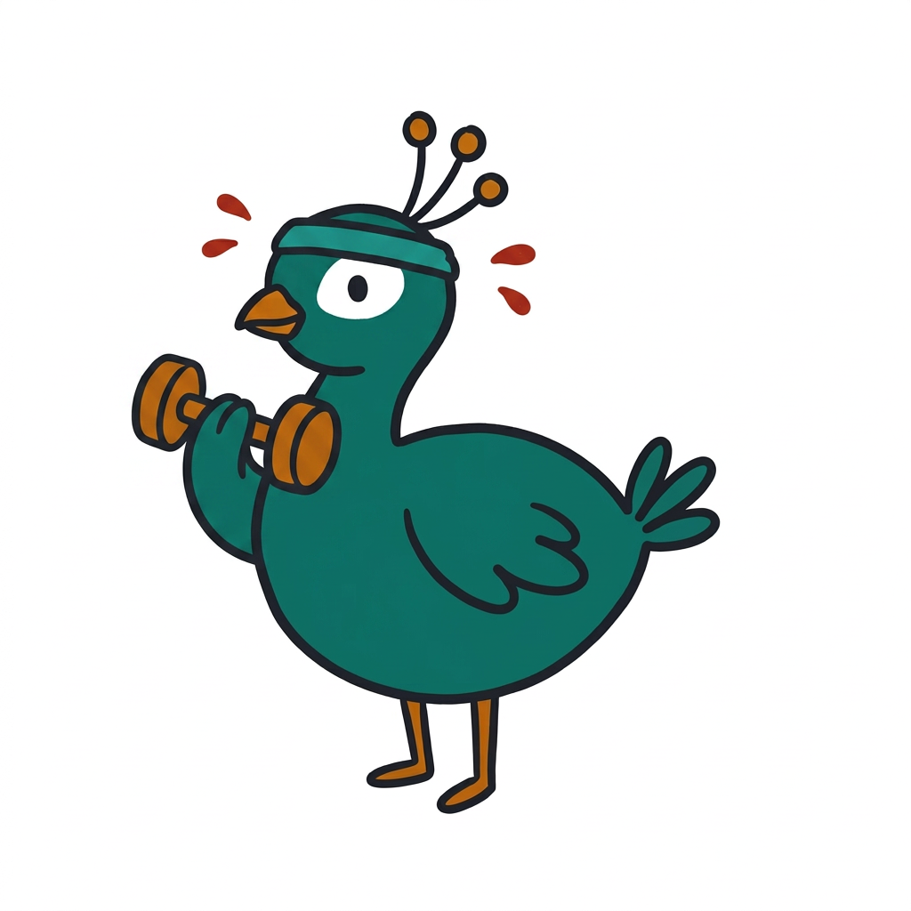

The peacock that
never phoned home
Raise a zero-cost AI agent in your browser, from egg to peacock. No server, no API key, no cloud bill.

Four minutes of setup
- Open this folder with Live Server, the same way you did for the prework. The browser caches the model per address, so any other way means downloading 1.5 GB again.
- Skipped the prework? Open precache.html and let it run while the talk starts.
- Open 0-egg.html. You should see an egg and no red text. Red text means something about your browser or GPU needs fixing.
The slides
Eight chapters, one per thing your agent learns. Press F for full screen. Every chapter card tells you which file to open if you fall behind.
Open the slides
Open the file for the chapter you are on
Each file is where you should be at the end of that chapter. Behind? Open the one before and carry on. The feather strip at the top of every page lights up as your code earns it, and the pills below it hold example prompts: click one to fill the chat box.
-

Open 0-egg.htmlEgg
The start. The page, the bird and the quest panel are ready, and you type nothing yet.
-
 Open 1-brain.html
Open 1-brain.htmlBrain
Chapter 1. Import WebLLM and load the model. The egg hatches when it is ready.
-
 Open 2-voice.html
Open 2-voice.htmlVoice
Chapter 2. Ask the model something, then stream the answer so it stops staring at you.
-
 Open 3-character.html
Open 3-character.htmlCharacter
Chapter 3. Put a system message first, so it sounds like someone and not like every other chatbot.
-
 Open 4-memory.html
Open 4-memory.htmlMemory
Chapter 4. Keep a chat history so it remembers your name. Four feathers: the core loop is yours.
-
 Open 5-face.html
Open 5-face.htmlFace
Chapter 5. The same brain in a proper chat window. Read along, there is nothing to type.
-

Open 6-yours.htmlYours
Chapter 6. FitCoach, finished: a name, a system prompt, a welcome message and its own colour. Now make yours.
-
 Open 7-hands.html
Open 7-hands.htmlHands
Chapter 7. Tools. The model writes a marker, and your JavaScript looks up Wikipedia or the weather.
-
 Homework
HomeworkHome
Chapter 8, tonight's homework. Push your 5-face.html to GitHub Pages as index.html. The last feather lights up on github.io.